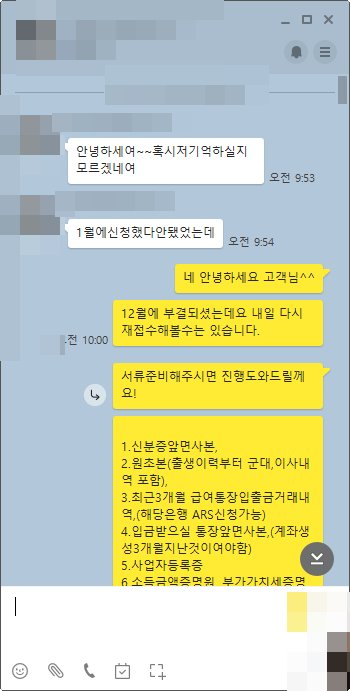
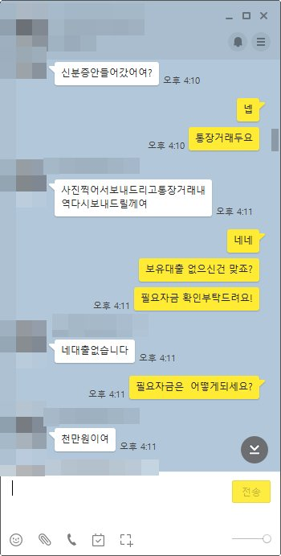
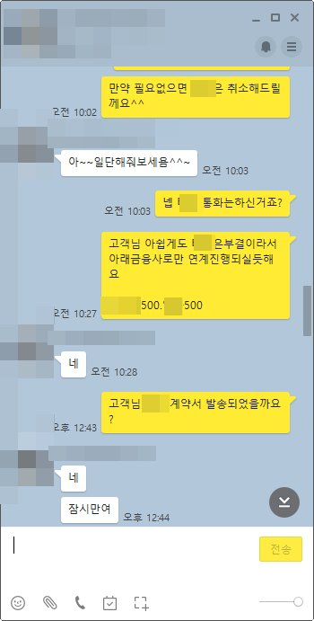
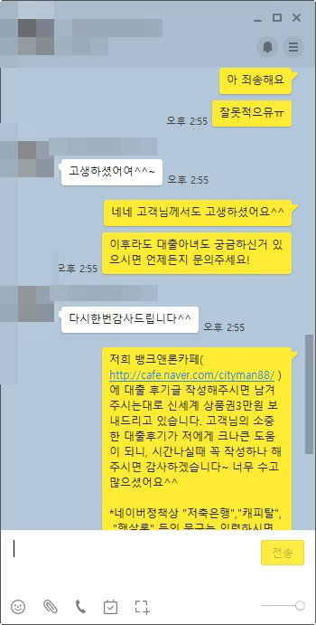

소득적은 개인회생 사업자 1000만원 승인사례
안녕하세요~ 오늘은 제가 상담드린 김** 고객님의 대출 사례를 안내해 드리겠습니다.
김** 고객님은 4년째 소규모호프집을 운영하고 계신 개인회생 14회차 진행중이신 사업자님신데요 코로나 여파로 매출이 평균 350미만이시다보니 사업자금이 급하게 필요하셨습니다. 작년 12월에는 회차도 짧고 미납도 있으셔서 대출진행이 어려웠는데요 이번에 미납3회를 정리하고 12월 대출 진행후 3개월이 지나서 다시한번 대출신청 문의를 주셨습니다.
저는 고객님과 상담후 12월에도 말씀드렸지만 미납만 해결가능하면 현재 보유대출이 없으시기때문에 원하는 자금을 충분히 마련할가능성이 높다고 안내를 도와드렸으나 그당시에는 미납해결을 전혀 할수 없는상황이셔서 진행이 어려웠습니다. 이번에는 미납을 해결하고 오셨기때문에 가능성이 상당히 높은 금융사로 진행도와드렸고 그 결과 고객님 원하는 자금인 1000만원을 확보하실수 있으셨습니다.
고객님께서는 매우 만족해하셨고 이후에도 대출과 변제금미납관리를 잘해서 이후 추가자금 필요시에도 연락주시기로 하셨습니다. 아래는 김** 고객님과 상담한 카톡내용이니 많은 도움되셨으면 좋겠습니다. 감사합니다.



